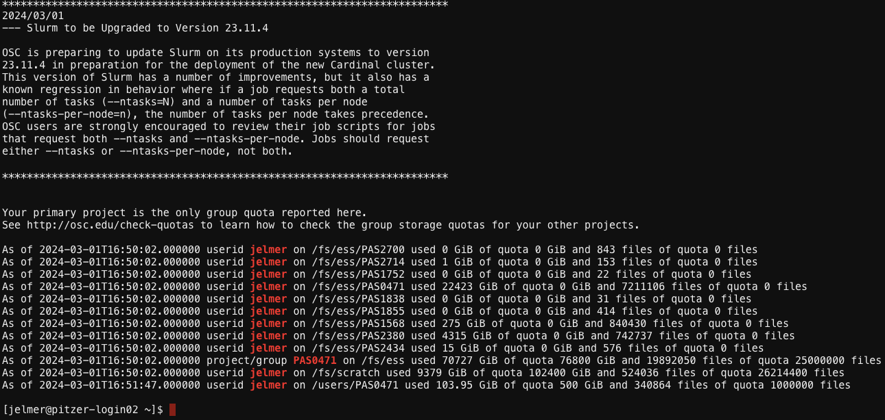

# (Don't run this)
x <- 5
x[1] 5Many of the things you typically do by pointing and clicking can alternatively be done by typing commands. The Unix shell allows you to interact with computers via commands.
Here are some reasons why you may want to use this seemingly archaic technique:
Here are a few interrelated terms you’re likely to run across:
While you’ve seen that these are not all synonyms, in day-to-day computing/bioinformatics, they are often used interchangeably.
You will be using a Unix shell at the Ohio Supercomputer Center (OSC) — see the instructions below to open one.
Please follow along actively by typing and executing all commands shown below (unless it explicitly says you shouldn’t run something), not just the section that are labeled as “exercises”. If you skip certain commands, later ones will in many cases not work.

You can’t right-click in this shell, so to copy-and-paste:
Try copying and pasting a random word into your shell. This may just work, you may get a permission pop-up, or it may silently fail — if the latter, click on the clipboard icon in your browser’s address bar (see red circle in screenshot below):

You may also want to change the shell’s color scheme by selecting an option other than “Default” in the “Themes:” dropdown menu in the top-right.
Inside your terminal, the “prompt” indicates that the shell is ready for a command. What is shown exactly varies across shells and can also be customized, but our prompts at OSC should show the following information:
<username>@<node-name> <working-directory>]$
For example (note that ~ means your Home directory/folder):
[jelmer@pitzer-login02 ~]$ We type our commands after the dollar sign, and then press Enter to execute the command. When the command has finished executing, we’ll get our prompt back and can type a new command.
date, whoami, pwdThe Unix shell comes with hundreds of “commands”: small programs that perform specific actions. If you’re familiar with R or Python, a Unix command is like an R/Python function.
Let’s start with a few simple commands:
The date command prints the current date and time:
dateTue Mar 5 09:11:51 EST 2024The whoami (who-am-i) command prints your username:
whoamijelmerThe pwd (Print Working Directory) command prints the path to the directory you are currently located in:
pwd/users/PAS0471/jelmer
# [Yours will be different! You are in your Home directory.]All 3 of those commands provided us with some output. That output was printed to screen, which is the default behavior for nearly every Unix command.
pwd, directories are separated by forward slashes /.my_long_filename).cd and command actions & argumentsIn the above three command line expressions:
But many commands perform an action other than providing information. For example, you can use the command cd to Change Directory (i.e. change your working dir). And like many commands that perform an action, cd normally has no output at all.
Let’s use cd to move to another directory by specifying the path to that directory after the cd command:
cd /fs/ess/PAS2714pwd/fs/ess/PAS2714In more abstract terms, what we did above was to provide cd with an argument, namely the path of the dir to move to. Arguments generally tell commands what file(s) or directory/ies to operate on.
As we’ve seen, then, cd gives no output when it successfully changed the working directory. But let’s also see what happens when it does not succeed — it gives an error:
cd /fs/ess/PAs2714bash: cd: /fs/ess/PAs2714: No such file or directoryWe used a lowercase “s” in /PAs2714/ — this should have been /PAS2714/.
As pointed out above, everything, including paths, is case-sensitive in the Unix shell!
ls and command optionslsThe ls command, short for “list”, will list files and directories:
lssandbox share users(You should still be in /fs/ess/PAS2714. If not, cd there first.)
ls output colors (click to expand)
The ls output above does not show the different colors you should see in your shell — the most common ones are:
data and metadata above)README.md above)By default, ls will list files and dirs in your current working dir, and in the way shown above. For which dir ls lists files and dirs can be changed with arguments, and how ls shows the output can be changed with options.
In general, whereas arguments tell a command what to operate on, options will modify its behavior. For example, we can call ls with the option -l (a dash followed by a lowercase L):
ls -l total 2
drwxr-xr-x+ 2 jelmer PAS0471 4096 Mar 1 16:23 sandbox
drwxr-xr-x+ 4 jelmer PAS0471 4096 Mar 1 16:13 share
drwxrwxrwx+ 3 jelmer PAS0471 4096 Mar 1 16:19 usersNotice that it lists the same items as above, but printed in a different format: one item per line, with additional information such as the date and time each file was last modified, and file sizes in bytes (to the left of the date).
Let’s add another option, -h:
ls -l -htotal 1.5K
drwxr-xr-x+ 2 jelmer PAS0471 4.0K Mar 1 16:23 sandbox
drwxr-xr-x+ 4 jelmer PAS0471 4.0K Mar 1 16:13 share
drwxrwxrwx+ 3 jelmer PAS0471 4.0K Mar 1 16:19 usersThe only difference is in the format of the column reporting the sizes of the items listed.
We now have “Human-readable filesizes” (hence -h), where sizes on the scale of kilobytes will be shown with Ks, of megabytes with Ms, and of gigabytes with Gs. That can be really useful especially for very large files.
Conveniently, options can be “pasted together” as follows:
ls -lh
# (Output not shown, same as above)Arguments to ls should be dirs or files to operate on. For example, if we wanted to see what’s inside the share dir, instead of inside our working dir, we could type3:
ls sharedata README.md resultsTo find out what data is contained in this dir, let’s take a look at the README.md file, which provides some information about the data set we will work with during the workshop.
There are several commands to view the contents of files — the simplest is cat, which will print the entire contents of a file to screen:
cat share/README.mdThis 16S amplicon metabarcoding data set compares soil bacterial populations
under two different rotational schemes (corn-soy) vs (corn-soy-wheat) at
two research farms in Ohio (Northwest Agricultural Research Station(NW) and Western Agricultural Research Station (W)).
There are 32 plots (Ex: 102A) in four blocks (100-400).
Plots were split into A and BC plots to include a cover crop treatment.The head command will only print the first 10 lines of a file. Let’s use that to examine this dataset’s metadata file:
head share/data/meta/meta.tsvSampleID Location Rotation Plot Block
NW102AB NWARS CS 102AB 100
NW102C NWARS CS 102C 100
NW103AB NWARS CSW 103AB 100
NW103C NWARS CSW 103C 100
NW201AB NWARS CSW 201AB 200
NW201C NWARS CSW 201C 200
NW203A NWARS CS 203A 200
NW203BC NWARS CS 203BC 200
NW304A NWARS CSW 304A 300Let’s dig a little deeper and check the share/data dir:
ls share/datafastq meta refThe data dir appears to contain three (sub)dirs with different kinds of data. We’ll talk in detail about that later, but for now let’s look inside the fastq dir:
ls share/data/fastqNW102AB_R1.fastq.gz NW201C_R1.fastq.gz NW305AB_R1.fastq.gz NW404BC_R1.fastq.gz W204A_R1.fastq.gz W303C_R1.fastq.gz W404A_R1.fastq.gz
NW102AB_R2.fastq.gz NW201C_R2.fastq.gz NW305AB_R2.fastq.gz NW404BC_R2.fastq.gz W204A_R2.fastq.gz W303C_R2.fastq.gz W404A_R2.fastq.gz
NW102C_R1.fastq.gz NW203A_R1.fastq.gz NW305C_R1.fastq.gz W101AB_R1.fastq.gz W204BC_R1.fastq.gz W304AB_R1.fastq.gz W404BC_R1.fastq.gz
NW102C_R2.fastq.gz NW203A_R2.fastq.gz NW305C_R2.fastq.gz W101AB_R2.fastq.gz W204BC_R2.fastq.gz W304AB_R2.fastq.gz W404BC_R2.fastq.gz
NW103AB_R1.fastq.gz NW203BC_R1.fastq.gz NW403A_R1.fastq.gz W101C_R1.fastq.gz W205A_R1.fastq.gz W304C_R1.fastq.gz
NW103AB_R2.fastq.gz NW203BC_R2.fastq.gz NW403A_R2.fastq.gz W101C_R2.fastq.gz W205A_R2.fastq.gz W304C_R2.fastq.gz
NW103C_R1.fastq.gz NW304A_R1.fastq.gz NW403BC_R1.fastq.gz W103AB_R1.fastq.gz W205BC_R1.fastq.gz W403AB_R1.fastq.gz
NW103C_R2.fastq.gz NW304A_R2.fastq.gz NW403BC_R2.fastq.gz W103AB_R2.fastq.gz W205BC_R2.fastq.gz W403AB_R2.fastq.gz
NW201AB_R1.fastq.gz NW304BC_R1.fastq.gz NW404A_R1.fastq.gz W103C_R1.fastq.gz W303AB_R1.fastq.gz W403C_R1.fastq.gz
NW201AB_R2.fastq.gz NW304BC_R2.fastq.gz NW404A_R2.fastq.gz W103C_R2.fastq.gz W303AB_R2.fastq.gz W403C_R2.fastq.gzAh, FASTQ files! These contain our sequence data (the reads from the Illumina sequencer), and we’ll go and explore them in a bit.
We’ll combine options and arguments to take a closer look at our dir with FASTQ files — now the -h option is especially useful and allows us to see that the FASTQ files are around 2-3 Mb in size:
ls -lh share/data/fastqtotal 150M
-rw-r-----+ 1 jelmer PAS0471 2.0M Mar 1 11:24 NW102AB_R1.fastq.gz
-rw-r-----+ 1 jelmer PAS0471 2.6M Mar 1 11:24 NW102AB_R2.fastq.gz
-rw-r-----+ 1 jelmer PAS0471 2.3M Mar 1 11:24 NW102C_R1.fastq.gz
-rw-r-----+ 1 jelmer PAS0471 3.0M Mar 1 11:24 NW102C_R2.fastq.gz
-rw-r-----+ 1 jelmer PAS0471 1.9M Mar 1 11:24 NW103AB_R1.fastq.gz
-rw-r-----+ 1 jelmer PAS0471 2.6M Mar 1 11:24 NW103AB_R2.fastq.gz
-rw-r-----+ 1 jelmer PAS0471 2.3M Mar 1 11:24 NW103C_R1.fastq.gz
-rw-r-----+ 1 jelmer PAS0471 3.1M Mar 1 11:24 NW103C_R2.fastq.gz
-rw-r-----+ 1 jelmer PAS0471 1.9M Mar 1 11:24 NW201AB_R1.fastq.gz
-rw-r-----+ 1 jelmer PAS0471 2.5M Mar 1 11:24 NW201AB_R2.fastq.gz
# [...output truncated...]The FASTQ files are so small because we’ve “subsampled” them: these only contain 10% of the reads of the original files. This will allow us to do the demonstrational analyses in the workshops more rapidly.
List the files in the share/data/ref dir:
ls -lh share/data/reftotal 131M
-rwxr--r-- 1 jelmer PAS2714 131M Feb 27 11:53 silva_nr99_v138.1_train_set.fa.gz.fa), which has been compressed (hence the extension .gz).Command history: If you hit the ⇧ (up arrow) once, you’ll retrieve your most recent command, and if you keep hitting it, you’ll go further back. The ⇩ (down arrow) will go the other way: towards the present.
Your cursor can be anywhere on a line (not just at the end) when you press Enter to execute a command!
Tab completion: file paths can Tab-complete! Try to type a partial path and test it. If you’re not getting it to work, it might be worth Googling this feature and watching a demo video.
Any text that comes after a # is considered a comment instead of code!
# This entire line is a comment - you can run it and nothing will happen
pwd # 'pwd' will be executed but everything after the '#' is ignored/fs/ess/PAS2714If your prompt is “missing”, the shell is still busy executing your command, or you typed an incomplete command. To abort in either of these scenarios, press Ctrl+C and you will get your prompt back.
To simulate a long-running command that we may want to abort, we can use the sleep command, which will make the computer wait for a specified amount of time until giving your prompt back. Run the below command and instead of waiting for the full 60 seconds, press Ctrl + C to get your prompt back sooner!
sleep 60sOr, use Ctrl + C after running this example of an incomplete command (an opening parenthesis ():
(Absolute (full) paths (e.g. /fs/ess/PAS2714)
Paths that begin with a / always start from the computer’s root directory, and are called “absolute paths”.
(They are equivalent to GPS coordinates for a geographical location, as they work regardless of where you are).
Relative paths (e.g. data/fastq)
Paths that instead start from your current working directory are called “relative paths”.
(These work like directions along the lines of “take the second left:” they depend on your current location.)
# Move into the 'PAS2714' dir with an absolute path:
cd /fs/ess/PAS2714
# Then, move into the 'share/data' dir with a relative path:
cd share/data # Absolute path is /fs/ess/PAS2714/share/data~ (a tilde) — represents your Home directory. For example, cd ~ moves you to your Home dir.. (a single period) — represents the current working directory... (two periods) — Represents the directory “one level up”, i.e. towards the computer’s root dir.# (You should be in /fs/ess/PAS2714/share/data)
ls .. # One level up, listing /fs/ess/PAS2714/sharedata README.md resultsThis pattern can be continued all the way to the root of the computer, so ../.. means two levels up:
ls ../.. # Two levels up, listing /fs/ess/PAS2714sandbox share usersAll of the above shortcuts (., .., ~) are general shell shortcuts that work with any command that accepts a path/file name.
/fs/ess/PAS2714 and back to share/data once again.cd ../..
cd share/datals ~
# (Output not shown, will vary from person to person)You are likely familiar with the concept of variables in either the Unix shell, R, or another language.
Assigning and printing the value of a variable in R:
# (Don't run this)
x <- 5
x[1] 5Assigning and printing the value of a variable in the Unix shell:
x=5
echo $x5= in x=5.$ prefix to reference (but not to assign) variables in the shell4.echo command, a general command to print text, to print the value of $x (cf. in R).By the way, echo can also print literal text (as shown below) or combinations of literals and variables (next exercise):
echo "Welcome to the Unix shell"Welcome to the Unix shellEnvironment variables are pre-existing variables that have been assigned values automatically. Two examples:
# $HOME contains the path to your Home dir:
echo $HOME/users/PAS0471/jelmer# $USER contains your user name:
echo $USERjelmerB) Print “Hello there, <your username>” (e.g. “Hello there, marcus”) to the screen:
# (This would also work without the " " quotes)
echo "Hello there $USER"Hello there jelmermkdirThe mkdir command creates new directories. For example, to create your own dir within /fs/ess/PAS2714:
cd /fs/ess/PAS2714/users
mkdir $USERLet’s move into our newly created dir and create two directories at once:
cd $USER
mkdir scripts sandboxLet’s check what we did:
lssandbox scripts$USER?
Instead of $USER, you can also type your literal username. If you do that, make sure that you get your username exactly right, including any capitalization. For example, I (username jelmer) could have run the following commands instead of the ones above with $USER:
mkdir jelmer
cd jelmermkdir with -p (Click to expand)
By default, mkdir does not work recursively: that is, it will refuse to make a dir inside a dir that does not yet exist. And if you try to do so, the resulting error might confuse you:
mkdir sandbox/2024/02/07mkdir: cannot create directory ‘sandbox/2024/02/07’: No such file or directoryWhy won’t you do your job,
mkdir!? 😡
Instead, we need to use the -p option to mkdir:
mkdir -p sandbox/2024/02/07The -p option also changes mkdir’s behavior when you try to create a dir that already exists. Without -p that will result in an error, and with -p it doesn’t complain about that (and it won’t recreate/overwrite the dir either).
cpAbove, you created your own directory — now, let’s get you a copy of the data we saw in the data dir.
The cp command copies files and/or directories from one location to another. It has two required arguments: what you want to copy (the source), and where you want to copy it to (the destination). We can summarize its basic syntax as cp <source> <destination>.
Let’s start by copying a single file twice:
# You should be in /fs/ess/PAS2714/users/$USER/
# Only provide a dir as the destination => Don't change the file name:
cp /fs/ess/PAS2714/sandbox/testfile.txt sandbox/
# Provide a file name as the destination => Give the copy a new name:
cp /fs/ess/PAS2714/sandbox/testfile.txt sandbox/testfile_mycopy.txt
# Check the files we created:
ls sandboxtestfile_mycopy.txt testfile.txtcp is not recursive by default, so if you want to copy a directory and all of its contents, you need to use its -r option. We’ll use that option to copy the dir with FASTQ files:
cp -rv /fs/ess/PAS2714/share/data /fs/ess/PAS2714/users/$USER/‘/fs/ess/PAS2714/share/data’ -> ‘./data’
‘/fs/ess/PAS2714/share/data/meta’ -> ‘./data/meta’
‘/fs/ess/PAS2714/share/data/meta/meta.tsv’ -> ‘./data/meta/meta.tsv’
‘/fs/ess/PAS2714/share/data/ref’ -> ‘./data/ref’
‘/fs/ess/PAS2714/share/data/ref/silva_nr99_v138.1_train_set.fa.gz’ -> ‘./data/ref/silva_nr99_v138.1_train_set.fa.gz’
‘/fs/ess/PAS2714/share/data/fastq’ -> ‘./data/fastq’
‘/fs/ess/PAS2714/share/data/fastq/W404A_R2.fastq.gz’ -> ‘./data/fastq/W404A_R2.fastq.gz’
‘/fs/ess/PAS2714/share/data/fastq/NW203A_R2.fastq.gz’ -> ‘./data/fastq/NW203A_R2.fastq.gz’
‘/fs/ess/PAS2714/share/data/fastq/W205BC_R2.fastq.gz’ -> ‘./data/fastq/W205BC_R2.fastq.gz’
# [...output truncated...]-v option, short for verbose, to make cp tell us what it did
We can also get a nice recursive overview of all our files with tree:
tree -C # '-C' for colors, not visible on this site though.
├── data
│ ├── fastq
│ │ ├── NW102AB_R1.fastq.gz
│ │ ├── NW102AB_R2.fastq.gz
│ │ ├── NW102C_R1.fastq.gz
│ │ ├── NW102C_R2.fastq.gz
│ │ ├── NW103AB_R1.fastq.gz
│ │ ├── NW103AB_R2.fastq.gz
├── [...Other FASTQ files not shown...]
│ ├── meta
│ │ └── meta.tsv
│ └── ref
│ └── silva_nr99_v138.1_train_set.fa.gz
├── sandbox
│ ├── testfile_mycopy.txt
│ └── testfile.txt
└── scriptsmv, and cp/mv tipsThe mv command is nearly identical to the cp command, except that it:
There is no separate renaming command, as both cp and mv allow you to provide a different name for the target.
Let’s start by moving the testfile.txt into our current working dir:
mv sandbox/testfile.txt .And we can move and rename at the same time as well — let’s do that to move testfile.txt back and give it a new name at once:
mv testfile.txt sandbox/testfile_v2.txtBy default, both mv and cp will overwrite files without warning! Use the -i (forinteractive) option to make it let you confirm before overwriting anything.
cp and mv — if the destination is:
mvIn which directory (in terms of a relative path from your working dir) would the FASTQ files end up with each of the following commands?
mv data/fastq data/fastq_filesmv data/fastq fastqmv data/fastq .What if you wanted to move the FASTQ files directly into your current working directory (from data/fastq)?
In which directory (in terms of relative path from your working dir) will the FASTQ files end up with each of the following commands?
mv data/fastq data/fastq_files — in the dir fastq_files (we’ve really just renamed the dir fastq to fastq_files)
mv data/fastq fastq — in fastq (because our source is a dir, so is the destination)
mv data/fastq . — in fastq also! (we’d need the syntax shown below to move the individual files directly into our current dir)
What if you wanted to move the FASTQ files directly into your current working directory?
For one file:
mv data/fastq/ASPC1_A178V_R1.fastq.gz .For all files:
mv data/fastq/* .rmThe rm command removes (deletes) files and directories.
One important thing to note upfront is that rm will permanently and irreversibly delete files without the typical “intermediate step” of placing them in a trash bin, like you are used to with your personal computer. With a healthy dosis of fear installed, let’s dive in.
To remove one or more files, you can simply pass the file names as arguments to rm as with previous commands. We will also use the -v (verbose) option to have it tell us what it did:
rm -v sandbox/testfile_v2.txtremoved sandbox/testfile_v2.txtrmAs a safety measure, rm will by default only delete files and not directories or their contents — i.e., like mkdir and cp, it refuses to act recursively by default. To remove dirs and their contents, use the -r option:
# First we create 3 levels of dirs - we need `-p` to make mkdir work recursively:
mkdir -p d1/d2/d3
# Then we try to remove the d1 dir - which fails:
rm d1rm: cannot remove ‘d1’: Is a directory# But it does work with the '-r' option:
rm -rv d1removed directory: ‘d1/d2/d3’
removed directory: ‘d1/d2’
removed directory: ‘d1’You should obviously be quite careful with rm -r!
rm with caution! (Click to expand)
rm -r can be very dangerous — for example rm -r / would at least attempt to remove the entire contents of the computer, including the operating system.
A couple ways to take precautions:
-i option, which will have you confirm each individual removal (can be tedious)rmdir command which will do just (and only) that — that way, if the dir isn’t empty after all, you’ll get an error.Shell wildcard expansion is a very useful technique to select files. Selecting files with wildcard expansion is called globbing. Wildcards are symbols that have a special meaning.
In globbing, the * wildcard matches any number of any character, including nothing.
The example below will match any files that contain the string “_R1”:
# (You should still be in /fs/ess/PAS2714/users/$USER)
ls data/fastq/*_R1*data/fastq/NW102AB_R1.fastq.gz data/fastq/NW201C_R1.fastq.gz data/fastq/NW305AB_R1.fastq.gz data/fastq/NW404BC_R1.fastq.gz data/fastq/W204A_R1.fastq.gz data/fastq/W303C_R1.fastq.gz data/fastq/W404A_R1.fastq.gz
data/fastq/NW102C_R1.fastq.gz data/fastq/NW203A_R1.fastq.gz data/fastq/NW305C_R1.fastq.gz data/fastq/W101AB_R1.fastq.gz data/fastq/W204BC_R1.fastq.gz data/fastq/W304AB_R1.fastq.gz data/fastq/W404BC_R1.fastq.gz
data/fastq/NW103AB_R1.fastq.gz data/fastq/NW203BC_R1.fastq.gz data/fastq/NW403A_R1.fastq.gz data/fastq/W101C_R1.fastq.gz data/fastq/W205A_R1.fastq.gz data/fastq/W304C_R1.fastq.gz
data/fastq/NW103C_R1.fastq.gz data/fastq/NW304A_R1.fastq.gz data/fastq/NW403BC_R1.fastq.gz data/fastq/W103AB_R1.fastq.gz data/fastq/W205BC_R1.fastq.gz data/fastq/W403AB_R1.fastq.gz
data/fastq/NW201AB_R1.fastq.gz data/fastq/NW304BC_R1.fastq.gz data/fastq/NW404A_R1.fastq.gz data/fastq/W103C_R1.fastq.gz data/fastq/W303AB_R1.fastq.gz data/fastq/W403C_R1.fastq.gzSome more file matching examples with * — if you would be in your data/fastq dir, then:
| Pattern | Matches files whose names… |
|---|---|
* |
Contain anything (matches all files) |
*fastq.gz |
End in “.fastq.gz” |
NW1* |
Start with “NW1” |
*_R1* |
Contain “_R1” |
*What pattern would you use if you wanted to select FASTQ files for the samples whose IDs end in AB (e.g. NW102AB)?
We’ll need a * on either side of our pattern, because the file names neither start not end with the pattern:
ls data/fastq/*AB_*data/fastq/NW102AB_R1.fastq.gz data/fastq/NW103AB_R2.fastq.gz data/fastq/NW305AB_R1.fastq.gz data/fastq/W101AB_R2.fastq.gz data/fastq/W303AB_R1.fastq.gz data/fastq/W304AB_R2.fastq.gz
data/fastq/NW102AB_R2.fastq.gz data/fastq/NW201AB_R1.fastq.gz data/fastq/NW305AB_R2.fastq.gz data/fastq/W103AB_R1.fastq.gz data/fastq/W303AB_R2.fastq.gz data/fastq/W403AB_R1.fastq.gz
data/fastq/NW103AB_R1.fastq.gz data/fastq/NW201AB_R2.fastq.gz data/fastq/W101AB_R1.fastq.gz data/fastq/W103AB_R2.fastq.gz data/fastq/W304AB_R1.fastq.gz data/fastq/W403AB_R2.fastq.gzLoops are a universal element of programming languages, and are used to repeat operations. Here, we’ll only cover the most common type of loop: the for loop.
A for loop iterates over a collection, such as a list of files, and allows you to perform one or more actions for each element in the collection. In the example below, our “collection” is just a short list of numbers (1, 2, and 3):
for a_number in 1 2 3; do
echo "In this iteration of the loop, the number is $a_number"
echo "--------"
doneIn this iteration of the loop, the number is 1
--------
In this iteration of the loop, the number is 2
--------
In this iteration of the loop, the number is 3
--------The indented lines between do and done contain the code that is being executed as many times as there are items in the collection: in this case 3 times, as you can tell from the output above.
# (Don't run this)
a_number=1
echo "In this iteration of the loop, the number is $a_number"
echo "--------"
a_number=2
echo "In this iteration of the loop, the number is $a_number"
echo "--------"
a_number=3
echo "In this iteration of the loop, the number is $a_number"
echo "--------"Here are two key things to understand about for loops:
In each iteration of the loop, one element in the collection is being assigned to the variable specified after for. In the example above, we used a_number as the variable name, so that variable contained 1 when the loop ran for the first time, 2 when it ran for the second time, and 3 when it ran for the third and last time.
The loop runs sequentially for each item in the collection, and will run exactly as many times as there are items in the collection.
for loop syntax (Click to expand)
On the first and last, unindented lines, for loops contain the following mandatory keywords:
| Keyword | Purpose |
|---|---|
for |
After for, we set the variable name (an arbitrary name; above we used a_number) |
in |
After in, we specify the collection (list of items) we are looping over |
do |
After do, we have one ore more lines specifying what to do with each item |
done |
Tells the shell we are done with the loop |
A very useful strategy is to loop over files with globbing, for example:
for fastq_file in data/fastq/*fastq.gz; do
echo "Running an analysis for file $fastq_file"...
# Additional commands to process the FASTQ file
doneRunning an analysis for file data/fastq/NW102AB_R1.fastq.gz...
Running an analysis for file data/fastq/NW102AB_R2.fastq.gz...
Running an analysis for file data/fastq/NW102C_R1.fastq.gz...
Running an analysis for file data/fastq/NW102C_R2.fastq.gz...
Running an analysis for file data/fastq/NW103AB_R1.fastq.gz...
Running an analysis for file data/fastq/NW103AB_R2.fastq.gz...
Running an analysis for file data/fastq/NW103C_R1.fastq.gz...
#[...output truncated...]Create a loop that will print:
morel is an Ohio mushroom
destroying_angel is an Ohio mushroom
eyelash_cup is an Ohio mushroomfor mushroom in morel destroying_angel eyelash_cup; do
echo "$mushroom is an Ohio mushroom"
donemorel is an Ohio mushroom
destroying_angel is an Ohio mushroom
eyelash_cup is an Ohio mushroomCommand-line Interface (CLI), as opposed to Graphical User Interface (GUI)↩︎
It’s certainly possible to have spaces in file names, but it’s a bad idea, and will get you into trouble sooner or later.↩︎
Beginners will often cd into a dir just to list its contents, but the method shown below is much quicker.↩︎
Anytime you see a word/string that starts with a $ in the shell, you can safely assume that it is a variable.↩︎